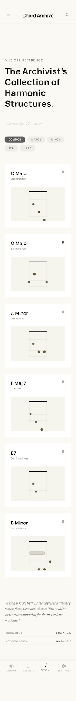
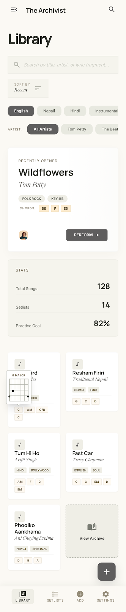
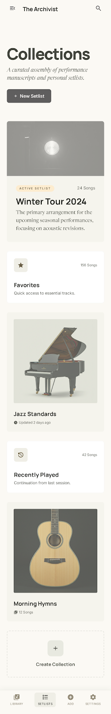
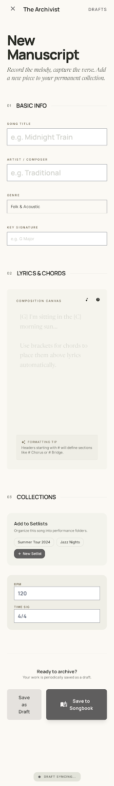

Chord Library
Browse the main song library and search screens.
Open screenThis package is rebuilt as a real static web app project for GitHub. Upload the extracted files to a repository, then enable GitHub Pages to publish it as a live app website.

Browse the main song library and search screens.
Open screen
Interactive chord view for songs in the songbook.
Open screen
Detailed single-song reading and controls.
Open screen
Playlist and collections management screen.
Open screen
Form screen to add songs into the library.
Open screen
Instrument tuner UI with microphone controls.
Open screenSettings → Pages.Deploy from a branch, branch main, folder / (root).